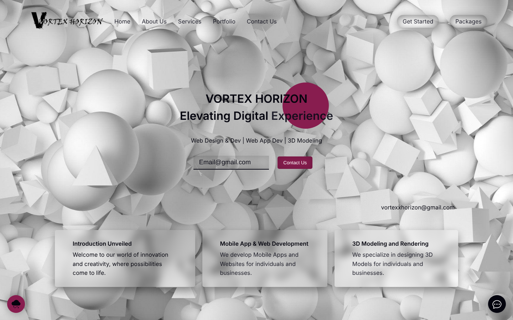
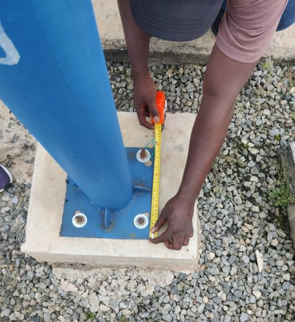
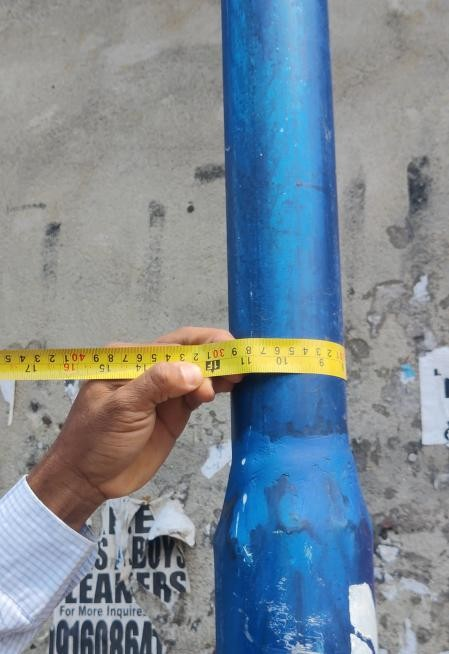
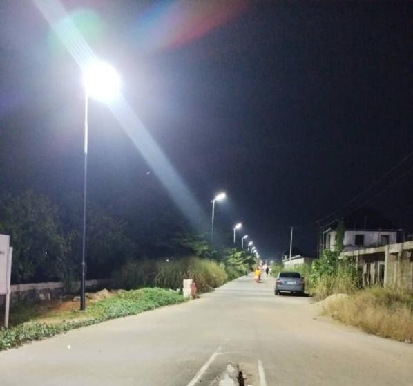
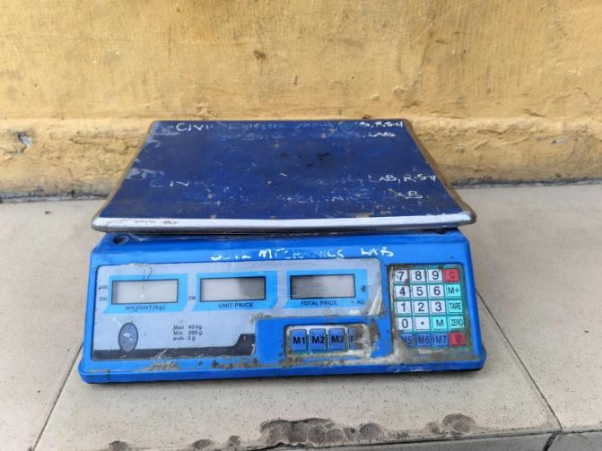

godwins-portfolio.vercel.app
I write software. I trained as an environmental engineer.
For engineering teams, startups and clients
For engineering employers and collaborators
Contract · Full stack · 2026
A consulting and booking platform that runs itself.
01 / BOOK
Client picks a consultation slot
HTML · CSS · JS
02 / CHECK
Server confirms the slot is free
Node · Express · MongoDB
03 / SCHEDULE
Calendar invite and Meet link
Google Calendar API
04 / CONFIRM
Confirmation emails go out
Resend
Contract · Frontend
A fundraising site for a child’s corrective surgery.

Concept project · Frontend · 2022
0
Frontend Mentor solutionsFrom CSS components to React apps
SIWES · July – December 2025
Industrial Trainee, Project Monitoring & Supervision Department, Rivers State Office

Measuring a plinth
Pole dimensions
Night checkB.Eng. final-year research · 2026

0kg
weighed · 6 days · 2 hostels · 9 categories
Female hostel (D)20.94 kg
Male hostel (E)4.13 kg
~80%plastics in both hostels by weight (78.5% male, 80.5% female)
0.209 vs 0.041 kg per person per day
100 occupants per hostel, Rivers State University
John Godwin Oamien